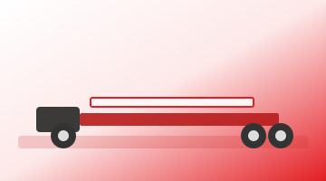

Перевозка длинномерных грузов
Организуем перевозку шпунта, рельсов, балок, труб и других негабаритных и длинномерных конструкций: подбираем тралы и низкорамники под массу, габариты и точки погрузки и разгрузки.
Свернуть
Согласуем маршрут с учётом ограничений по дорогам и объектам инфраструктуры, оформляем разрешительную документацию при необходимости, обеспечиваем сопровождение и контроль соблюдения режима крепления груза.
Работаем в связке с графиками железнодорожных и строительных площадок, чтобы поставка материалов совпадала с этапами работ и минимизировала простой техники.